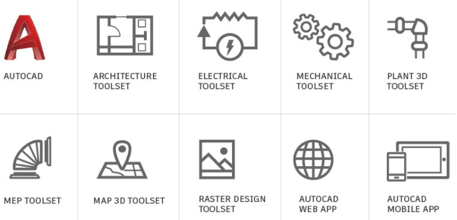
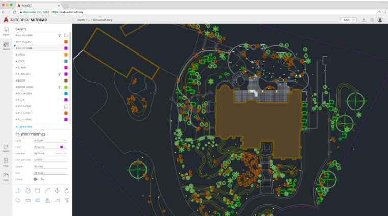
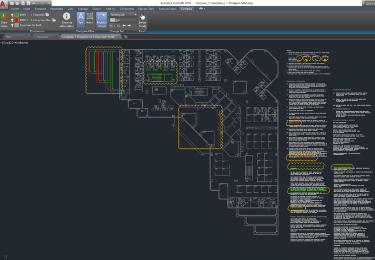
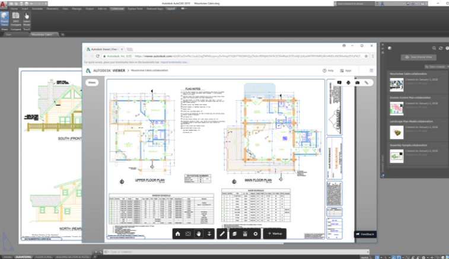

Aumento en la productividad con juegos de herramientas especializados
Con acceso a 7 conjuntos de herramientas especializadas, los suscriptores tienen más de 750,000 objetos inteligentes, estilos, partes, características y símbolos para elegir al dibujar. Los diseñadores pueden automatizar los planos de planta; dibujar rápidamente tuberías, equipos de planta o diseños de paneles eléctricos; incorporar datos SIG en el proceso de planificación; edita dibujos escaneados y convierte imágenes raster en objetos DWG mientras trabajas en una interfaz familiar de AutoCAD.
- Juego de herramientas de arquitectura :Utilice características de diseño de edificios especializadas y más de 8,000 objetos y estilos arquitectónicos inteligentes para acelerar el dibujo arquitectónico y la documentación.
- Juego de herramientas mecánicas: Utilice características de diseño mecánico especializado y más de 700,000 piezas, características y símbolos de fabricación inteligente para acelerar el diseño del producto.
- Conjunto de herramientas eléctricas :Utilice características de diseño eléctricas especializadas y más de 65,000 símbolos eléctricos inteligentes para aumentar la productividad para crear, modificar y documentar sistemas de controles eléctricos.
- Juego de herramientas MEP: Utilice funciones de ingeniería de MEP especializadas y más de 10,500 objetos mecánicos, eléctricos y de plomería inteligentes para diseñar, diseñar y construir sistemas.
- Plant 3D Toolset: Utilice el conjunto de herramientas de diseño e ingeniería de plantas especializado para producir P & ID de manera eficiente y luego integrarlos en un modelo de diseño de planta en 3D.
- Map 3D Toolset: Utiliza funciones de mapeo especializadas para incorporar datos GIS y CAD para apoyar la planificación, el diseño y la gestión de datos. Acceda a datos espaciales almacenados en archivos, bases de datos y servicios web, y agréguelos con sus datos de diseño de AutoCAD.
- Juego de herramientas de diseño de ráster: Utilice las herramientas de ráster a vector para ayudarlo a editar dibujos escaneados y convertir imágenes ráster en objetos DWG.
AutoCAD disponible en web y en dispositivos móviles
Al suscribirse a AutoCAD 2019 se incluye el acceso a la nueva aplicación web de AutoCad y a su aplicación movil.
AutoCad informa: Nos entusiasma lanzar la aplicación web AutoCAD que le permite acceder a AutoCAD directamente en su navegador web a través de web.autocad.com . Y no hay nada que descargar o instalar. Simplemente inicie sesión en su cuenta de Autodesk y acceda rápidamente a los archivos Trusted DWG, herramientas básicas de redacción y edición en 2D (por ejemplo, Arc, Circle, Rectangle, Offset, Trim y más), incluida la compatibilidad con Xref y la gestión de capas.
Identificar las diferencias de dibujo con DWG Compare
La nueva característica DWG Compare en AutoCAD 2019 y AutoCAD LT 2019 le ayuda a identificar fácilmente las diferencias gráficas entre dos revisiones de un dibujo o Xref. Visualice rápidamente los cambios, vea los enfrentamientos, revise la capacidad de construcción y más. Y no hay necesidad de preocuparse por perder algo, al cambiar las nubes de revisión se resaltarán aún más los cambios, y puede recorrer sistemáticamente cada uno para asegurarse de que se tengan en cuenta todos los detalles.
Vistas compartidas
Vistas compartidas es una mejora de la función "Compartir vistas de diseño". Esta característica AutoCAD 2019 y AutoCAD LT 2019 hace que sea más fácil para usted compartir diseños con las partes interesadas sin enviarles sus archivos DWG. Evite el engorroso flujo de trabajo comúnmente utilizado para publicar y enviar por correo electrónico diseños a través de archivos DWF o PDF; en su lugar, un archivo visible se crea en AutoCAD y se circula a través de un enlace compartible que se puede ver y comentar en el navegador de cualquier dispositivo con acceso a Internet. Y este año, los comentarios que hacen los colaboradores en el enlace compartido aparecen inmediatamente en su producto de escritorio de AutoCAD.
Mejoras de rendimiento 2D
Las operaciones que generalmente requieren AutoCAD para volver a dibujar o regenerar gráficos 2D (como cambiar el orden de los dibujos, hacer zoom, panoramizar y cambiar las propiedades de la capa, particularmente en dibujos grandes o dibujos con imágenes rasterizadas) ahora son dos veces más rápidos. Los nuevos controles en el cuadro de diálogo Rendimiento de gráficos le permiten configurar fácilmente el comportamiento del rendimiento de gráficos en 2D.